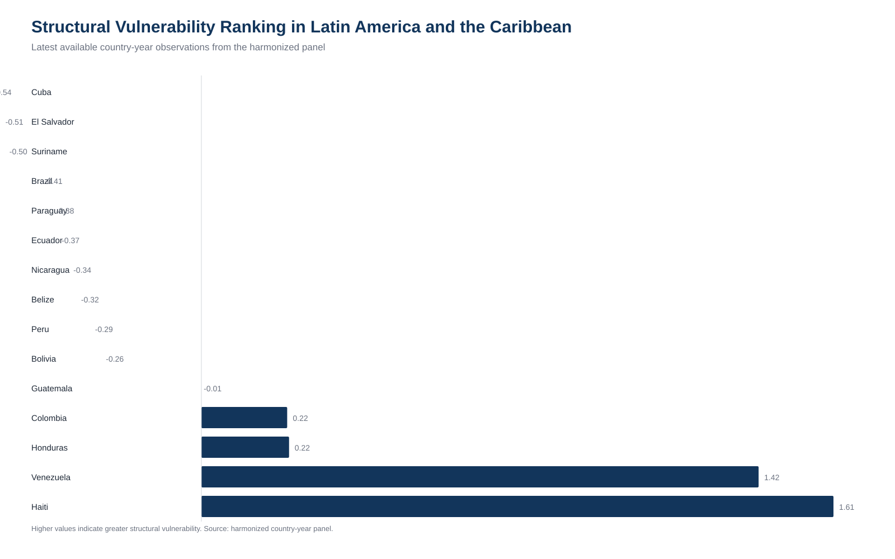
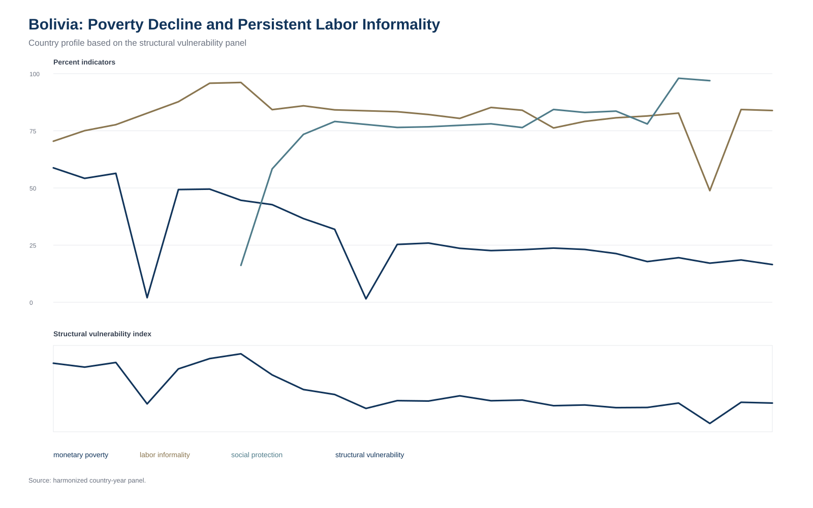
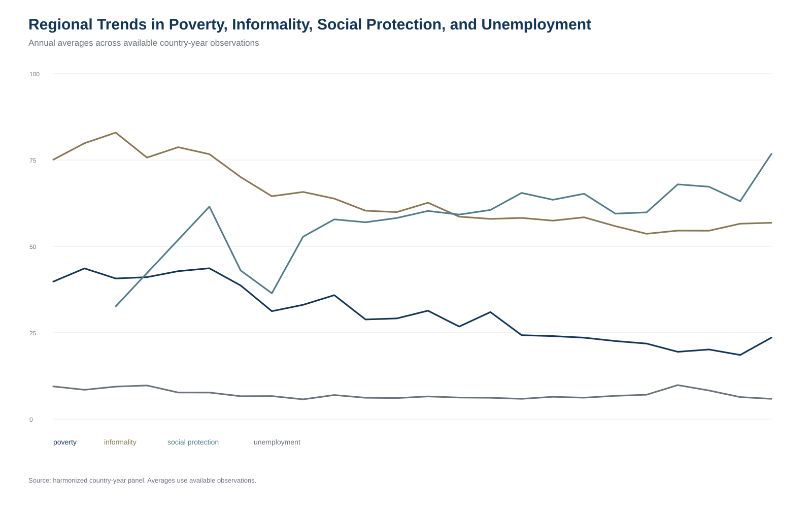
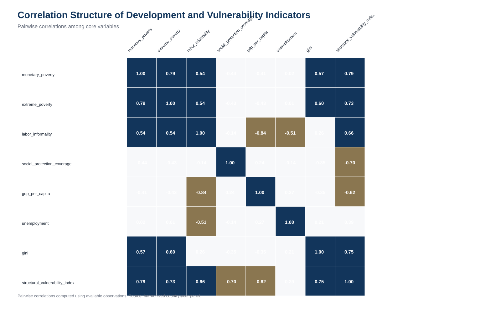
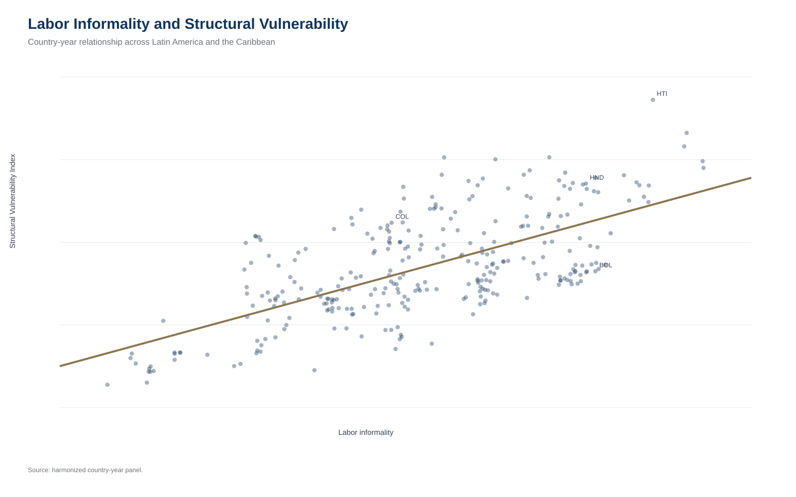
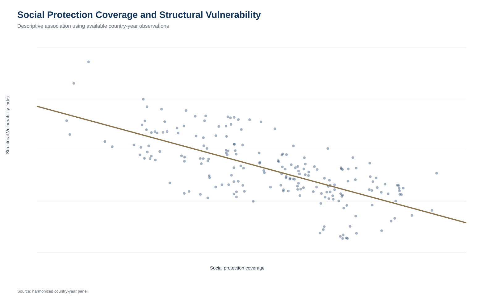
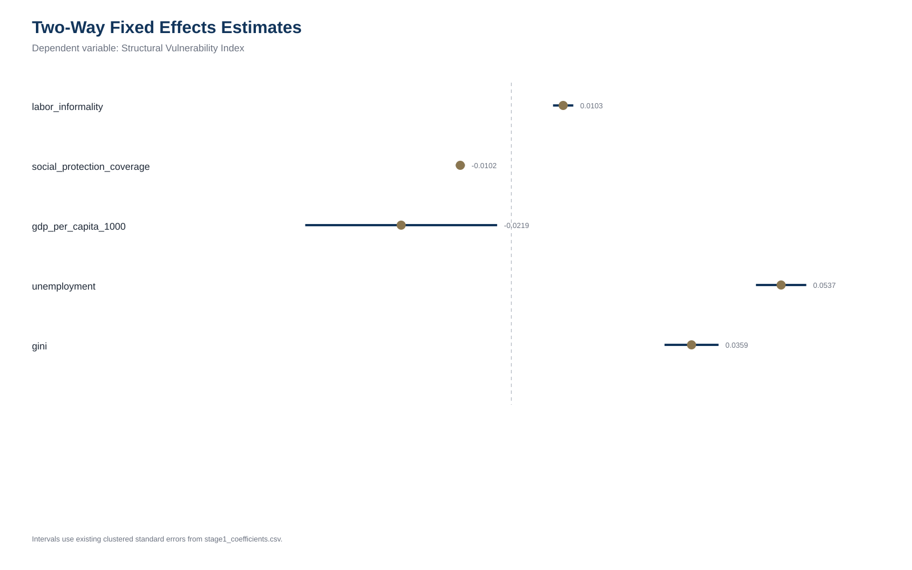
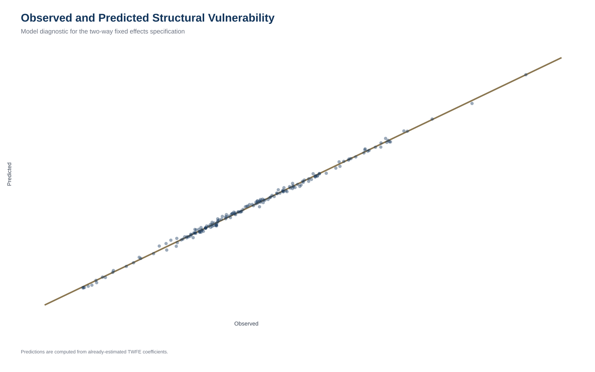
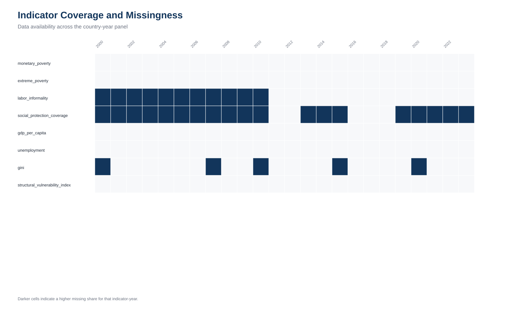
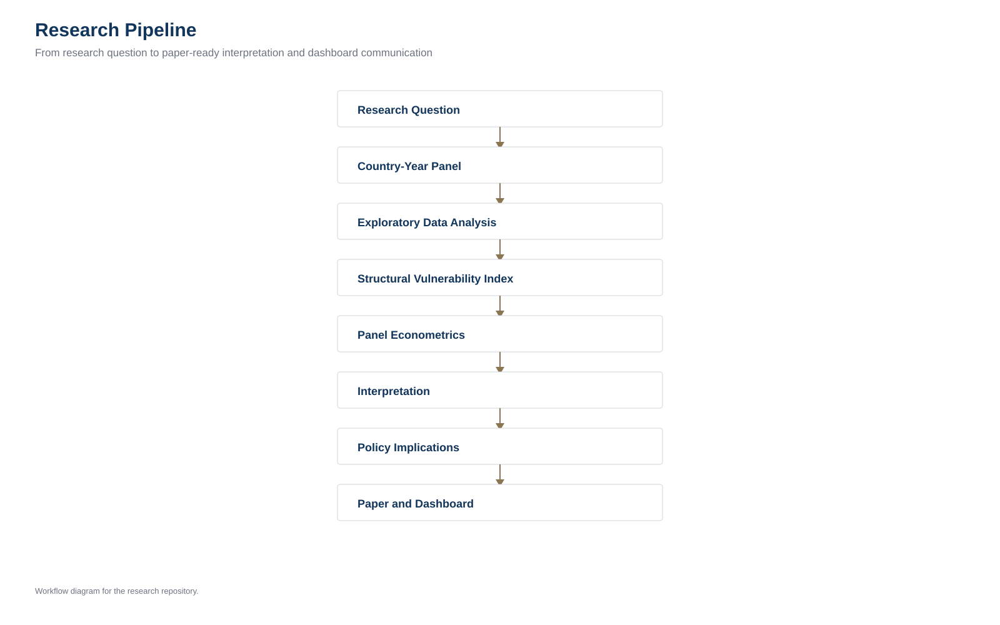

OECD-style dashboard
Structural Vulnerability in Latin America and the Caribbean
An applied development economics dashboard based on a harmonized country-year panel.
Research Question
How do poverty, labor informality, and social protection jointly shape structural vulnerability across Latin America and the Caribbean?
Main Findings
Structural Vulnerability Ranking

The ranking identifies countries where multiple dimensions of vulnerability overlap.
Bolivia Profile

Bolivia illustrates why poverty reduction does not automatically eliminate labor-market vulnerability.
Regional Trends

Regional averages summarize broad movements across available observations and should be read as descriptive trends.
Correlation and Mechanisms



Correlations and scatter plots are descriptive diagnostics and should not be read as causal effects.
Econometric Evidence


| Variable | TWFE coefficient | p-value |
|---|---|---|
| labor_informality | 0.0103 | <0.001 |
| social_protection_coverage | -0.0102 | <0.001 |
| gdp_per_capita_1000 | -0.0219 | 0.0388 |
| unemployment | 0.0537 | <0.001 |
| gini | 0.0359 | <0.001 |
| R-squared | 0.9977 |
These estimates are associational and should not be interpreted as causal effects.
Data Quality

Missingness varies by indicator and year. The analytical sample is narrower than the full panel because econometric specifications require jointly observed values.
Research Pipeline

Policy Interpretation
Policy strategies should address overlapping vulnerabilities rather than poverty alone. The descriptive and econometric evidence points to the importance of formal employment, social protection coverage, macroeconomic capacity, and inequality reduction.